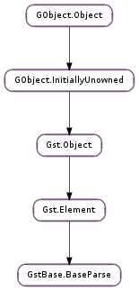

| add_index_entry(offset, ts, key, force) | |
| convert_default(src_format, src_value, dest_format, dest_value) | |
| finish_frame(frame, size) | |
| push_frame(frame) | |
| set_average_bitrate(bitrate) | |
| set_duration(fmt, duration, interval) | |
| set_frame_rate(fps_num, fps_den, lead_in, lead_out) | |
| set_has_timing_info(has_timing) | |
| set_infer_ts(infer_ts) | |
| set_latency(min_latency, max_latency) | |
| set_min_frame_size(min_size) | |
| set_passthrough(passthrough) | |
| set_pts_interpolation(pts_interpolate) | |
| set_syncable(syncable) | |
| set_ts_at_offset(offset) |
| Name | Type | Flags | Description |
|---|---|---|---|
| disable-passthrough | bool | r/w | Force processing (disables passthrough) |
None
| Name | Type | Access |
|---|---|---|
| element | Gst.Element | r |
| flags | int | r |
| segment | Gst.Segment | r |
| sinkpad | Gst.Pad | r |
| srcpad | Gst.Pad | r |
Bases: Gst.Element
This base class is for parser elements that process data and splits it into separate audio/video/whatever frames.
It provides for:
The purpose of this base class is to provide the basic functionality of a parser and share a lot of rather complex code.
Description of the parsing mechanism:
GstBase.BaseParse calls start to inform subclass that data processing is about to start now.
GstBase.BaseParse class calls set_sink_caps to inform the subclass about incoming sinkpad caps. Subclass could already set the srcpad caps accordingly, but this might be delayed until calling GstBase.BaseParse.finish_frame () with a non-queued frame.
At least at this point subclass needs to tell the GstBase.BaseParse class how big data chunks it wants to receive (min_frame_size). It can do this with GstBase.BaseParse.set_min_frame_size ().
GstBase.BaseParse class sets up appropriate data passing mode (pull/push) and starts to process the data.
GstBase.BaseParse gathers at least min_frame_size bytes of data either by pulling it from upstream or collecting buffers in an internal GstBase.Adapter.
A buffer of (at least) min_frame_size bytes is passed to subclass with handle_frame. Subclass checks the contents and can optionally return Gst.FlowReturn.OK along with an amount of data to be skipped to find a valid frame (which will result in a subsequent DISCONT). If, otherwise, the buffer does not hold a complete frame, handle_frame can merely return and will be called again when additional data is available. In push mode this amounts to an additional input buffer (thus minimal additional latency), in pull mode this amounts to some arbitrary reasonable buffer size increase. Of course, GstBase.BaseParse.set_min_frame_size () could also be used if a very specific known amount of additional data is required. If, however, the buffer holds a complete valid frame, it can pass the size of this frame to GstBase.BaseParse.finish_frame (). If acting as a converter, it can also merely indicate consumed input data while simultaneously providing custom output data. Note that baseclass performs some processing (such as tracking overall consumed data rate versus duration) for each finished frame, but other state is only updated upon each call to handle_frame (such as tracking upstream input timestamp).
Subclass is also responsible for setting the buffer metadata (e.g. buffer timestamp and duration, or keyframe if applicable). (although the latter can also be done by GstBase.BaseParse if it is appropriately configured, see below). Frame is provided with timestamp derived from upstream (as much as generally possible), duration obtained from configuration (see below), and offset if meaningful (in pull mode).
Note that check_valid_frame might receive any small amount of input data when leftover data is being drained (e.g. at EOS).
As part of finish frame processing, just prior to actually pushing the buffer in question, it is passed to pre_push_frame which gives subclass yet one last chance to examine buffer metadata, or to send some custom (tag) events, or to perform custom (segment) filtering.
During the parsing process GstBase.BaseParseClass will handle both srcpad and sinkpad events. They will be passed to subclass if event or src_event callbacks have been provided.
GstBase.BaseParse class calls stop to inform the subclass that data parsing will be stopped.
Subclass is responsible for providing pad template caps for source and sink pads. The pads need to be named “sink” and “src”. It also needs to set the fixed caps on srcpad, when the format is ensured (e.g. when base class calls subclass’ set_sink_caps function).
This base class uses Gst.Format.DEFAULT as a meaning of frames. So, subclass conversion routine needs to know that conversion from Gst.Format.TIME to Gst.Format.DEFAULT must return the frame number that can be found from the given byte position.
GstBase.BaseParse uses subclasses conversion methods also for seeking (or otherwise uses its own default one, see also below).
Subclass start and stop functions will be called to inform the beginning and end of data processing.
Things that subclass need to take care of:
| Parameters: | |
|---|---|
| Returns: | bool indicating whether entry was added |
| Return type: |
Adds an entry to the index associating offset to ts. It is recommended to only add keyframe entries. force allows to bypass checks, such as whether the stream is (upstream) seekable, another entry is already “close” to the new entry, etc.
| Parameters: |
|
|---|---|
| Returns: | True if conversion was successful. |
| Return type: |
Default implementation of “convert” vmethod in GstBase.BaseParse class.
| Parameters: |
|
|---|---|
| Returns: | a Gst.FlowReturn that should be escalated to caller (of caller) |
| Return type: |
Collects parsed data and pushes this downstream. Source pad caps must be set when this is called.
If frame ‘s out_buffer is set, that will be used as subsequent frame data. Otherwise, size samples will be taken from the input and used for output, and the output’s metadata (timestamps etc) will be taken as (optionally) set by the subclass on frame ‘s (input) buffer (which is otherwise ignored for any but the above purpose/information).
Note that the latter buffer is invalidated by this call, whereas the caller retains ownership of frame.
| Parameters: | frame (GstBase.BaseParseFrame) – a GstBase.BaseParseFrame |
|---|---|
| Returns: | Gst.FlowReturn |
| Return type: | Gst.FlowReturn |
Pushes the frame’s buffer downstream, sends any pending events and does some timestamp and segment handling. Takes ownership of frame’s buffer, though caller retains ownership of frame.
This must be called with sinkpad STREAM_LOCK held.
| Parameters: | bitrate (int) – average bitrate in bits/second |
|---|
Optionally sets the average bitrate detected in media (if non-zero), e.g. based on metadata, as it will be posted to the application.
By default, announced average bitrate is estimated. The average bitrate is used to estimate the total duration of the stream and to estimate a seek position, if there’s no index and the format is syncable (see GstBase.BaseParse.set_syncable ()).
| Parameters: |
|
|---|
Sets the duration of the currently playing media. Subclass can use this when it is able to determine duration and/or notices a change in the media duration. Alternatively, if interval is non-zero (default), then stream duration is determined based on estimated bitrate, and updated every interval frames.
| Parameters: |
|---|
If frames per second is configured, parser can take care of buffer duration and timestamping. When performing segment clipping, or seeking to a specific location, a corresponding decoder might need an initial lead_in and a following lead_out number of frames to ensure the desired segment is entirely filled upon decoding.
| Parameters: | has_timing (bool) – whether frames carry timing information |
|---|
Set if frames carry timing information which the subclass can (generally) parse and provide. In particular, intrinsic (rather than estimated) time can be obtained following a seek.
| Parameters: | infer_ts (bool) – True if parser should infer DTS/PTS from each other |
|---|
By default, the base class might try to infer PTS from DTS and vice versa. While this is generally correct for audio data, it may not be otherwise. Sub-classes implementing such formats should disable timestamp infering.
| Parameters: |
|---|
Sets the minimum and maximum (which may likely be equal) latency introduced by the parsing process. If there is such a latency, which depends on the particular parsing of the format, it typically corresponds to 1 frame duration.
| Parameters: | min_size (int) – Minimum size of the data that this base class should give to subclass. |
|---|
Subclass can use this function to tell the base class that it needs to give at least #min_size buffers.
| Parameters: | passthrough (bool) – True if parser should run in passthrough mode |
|---|
Set if the nature of the format or configuration does not allow (much) parsing, and the parser should operate in passthrough mode (which only applies when operating in push mode). That is, incoming buffers are pushed through unmodified, i.e. no check_valid_frame or parse_frame callbacks will be invoked, but pre_push_frame will still be invoked, so subclass can perform as much or as little is appropriate for passthrough semantics in pre_push_frame.
| Parameters: | pts_interpolate (bool) – True if parser should interpolate PTS timestamps |
|---|
By default, the base class will guess PTS timestamps using a simple interpolation (previous timestamp + duration), which is incorrect for data streams with reordering, where PTS can go backward. Sub-classes implementing such formats should disable PTS interpolation.
| Parameters: | syncable (bool) – set if frame starts can be identified |
|---|
Set if frame starts can be identified. This is set by default and determines whether seeking based on bitrate averages is possible for a format/stream.
| Parameters: | offset (int) – offset into current buffer |
|---|
This function should only be called from a handle_frame implementation.
GstBase.BaseParse creates initial timestamps for frames by using the last timestamp seen in the stream before the frame starts. In certain cases, the correct timestamps will occur in the stream after the start of the frame, but before the start of the actual picture data. This function can be used to set the timestamps based on the offset into the frame data that the picture starts.